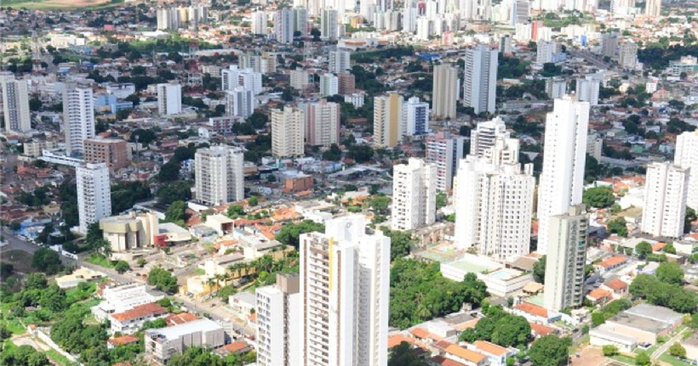
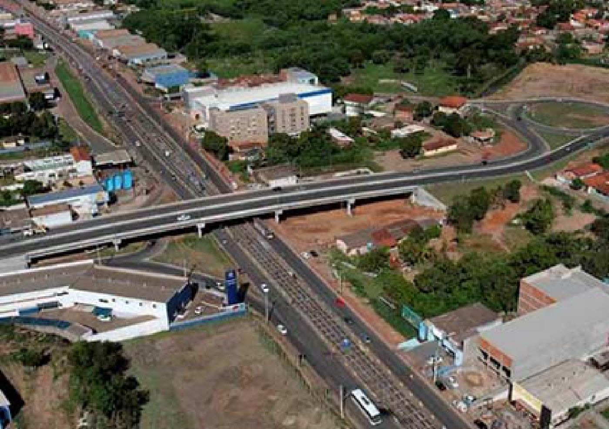
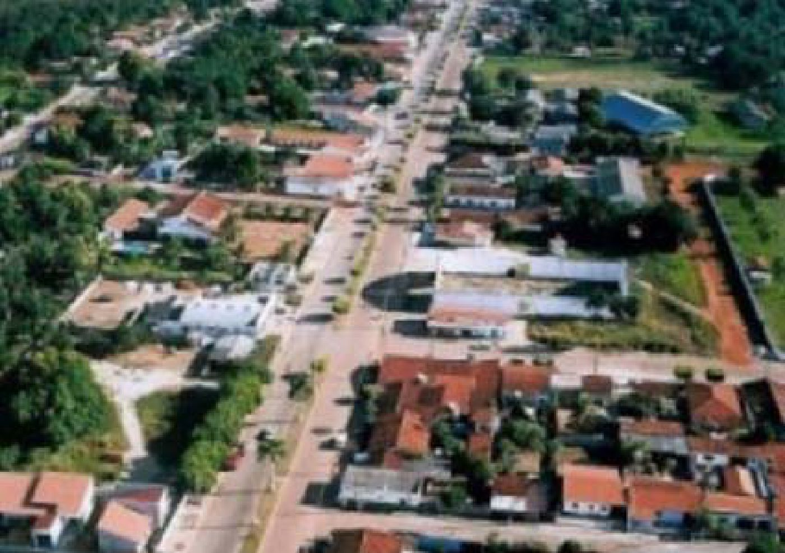
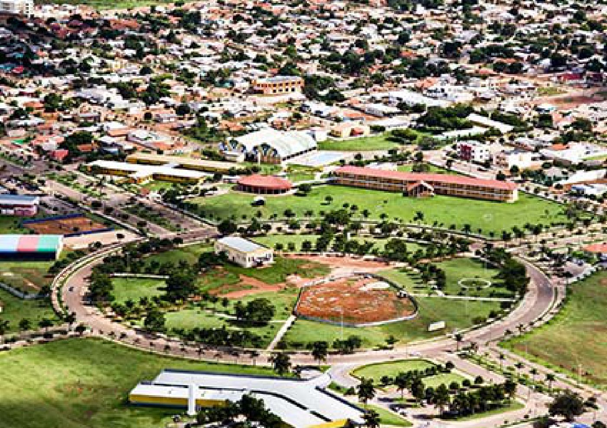
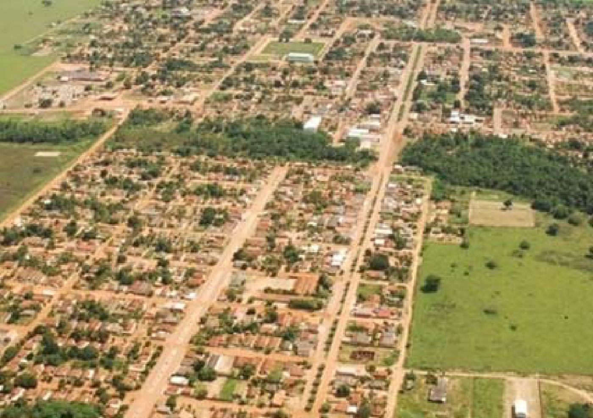
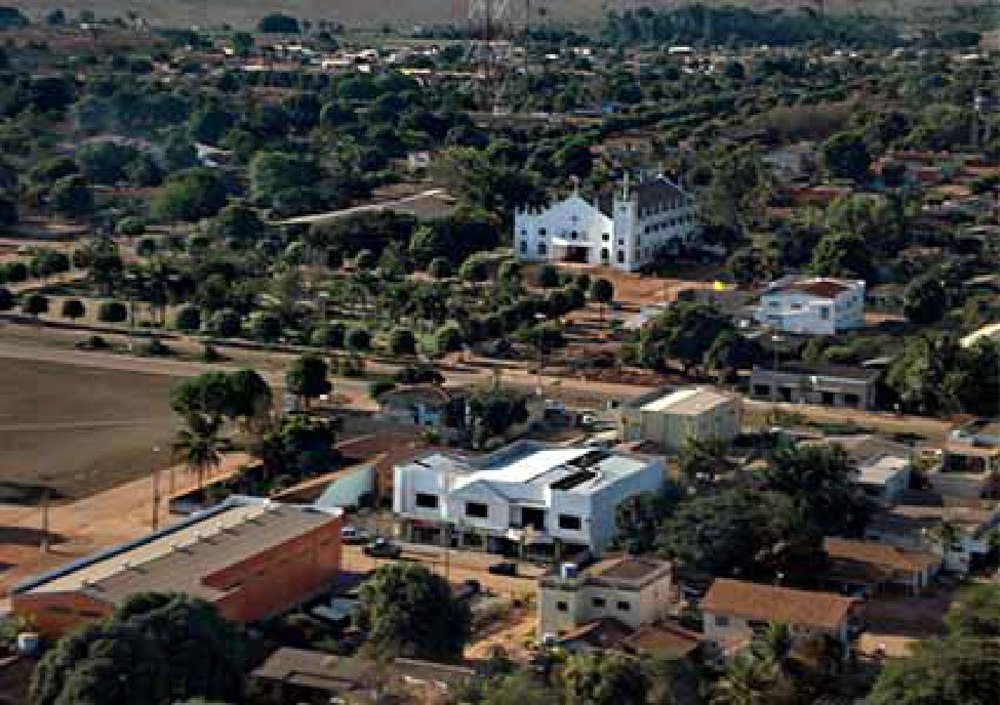
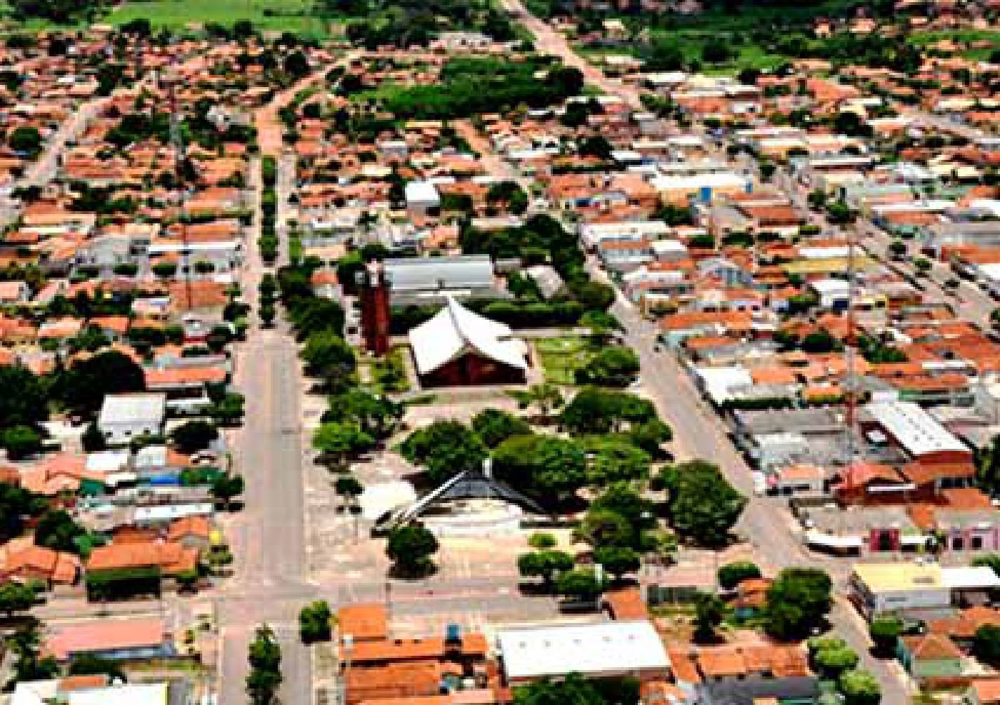
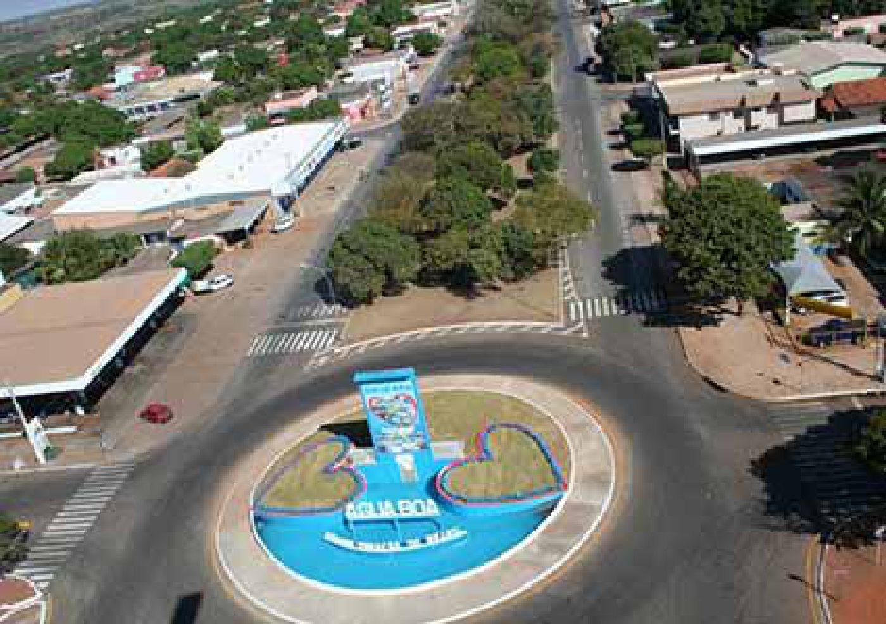

- Cidade: Cuiabá/MT
- Coordenadores: Pr. Fabiano e Pr. Domingos
- Contatos: (065) 99972-5223; (065) 99318-9186

- Cidade: Várzea Grande/MT
- Coordenador: Pr. Osvaldo Coutinho
- Secretaria: Tatiana
- Contatos: (065) 99225-2237

- Cidade: Nobres/MT
- End.: Rua Eurípedes Rondon, nº 400, Jardim Gloria
- Coordenador: Pr. Edemilson Nonato
- Contatos: (065) 99207-5148; (065) 9925-2237

- Cidade: Lucas do Rio Verde/MT
- Coordenador: Pr. Robson França
- Contatos: (065) 99938-5658; (065) 99225-2237
- Cidade: Tangara da Serra/MT
- Coordenador: Pr. Orlando Rosa
- Tutor: Alexandre
- Contatos: (065) 99961-9074

- Cidade: Barra do Bugres/MT
- Coordenador: Pr. Antonio
- Contatos: (065) 99634-2289
- Cidade: Confresa/MT
- End.: Rua Jerusalém, nº 78, Centro
- Coordenador: Pr. Cassio
- Contatos: (066) 98413-6702

- Cidade: Brasnorte/MT
- Coordenador: Pr. Sirineu
- Contatos: (066) 99607-7123

- Cidades: S.José dos Q. Marcos e M. d`Oeste/MT
- End.: ao lado dos correios de S.J. dos Q. Marcos/MT
- Coordenador: Hoedino
- Contatos: (065) 99962-2335

- Cidade: Água Boa/MT
- Coordenadores: Pr. João Batista e Pr. Avanil
- Contatos: (065) 99690-8434